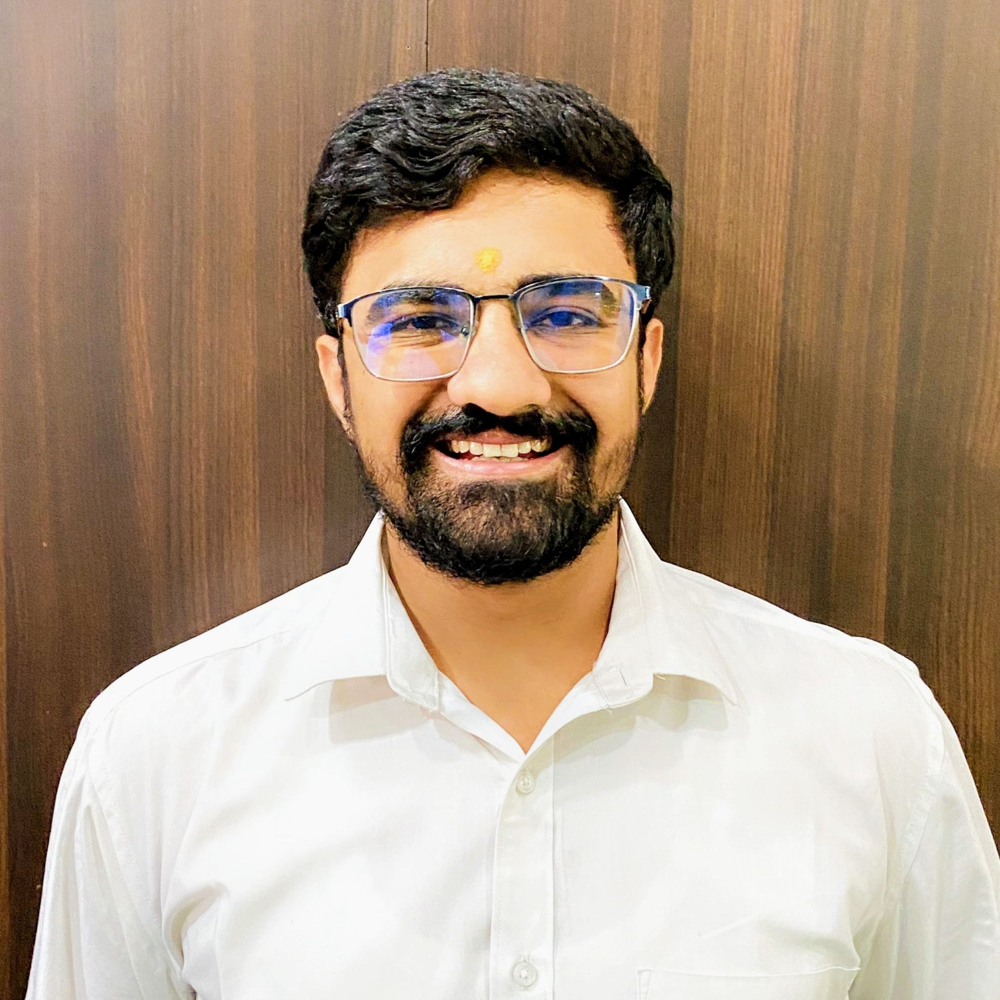

Spectral Graph Theory
Graph matrices, spectral descriptors, energy measures, and matrix based structural analysis.
Assistant Professor | Mathematics for Computer Science, AI & Data Science
Researcher in spectral graph theory, graph energy measures, vertex eccentricity based invariants, and interdisciplinary applications of mathematics in network analysis, data science, and computational systems.

About
I am an Assistant Professor of Mathematics at the Faculty of Computer Applications, Marwadi University, Rajkot. My academic work connects core mathematics with computing disciplines, particularly data science, machine learning foundations, network analysis, and computational problem solving.
My research focuses on spectral graph theory, graph energy, eccentricity based graph invariants, and mathematical modeling of complex networks. I developed and studied the concept of Vertex Eccentricity Labeled Energy (VELE), with investigations across standard graph families, graph operations, and applied network settings.
Research Focus
Graph matrices, spectral descriptors, energy measures, and matrix based structural analysis.
Vertex Eccentricity Labeled Energy, eccentricity driven invariants, graph operations, and structural behavior.
Mathematical tools for studying resilience, vulnerability, and structural patterns in complex networks.
Linear algebra, probability, statistics, optimization, and mathematical modeling for computing disciplines.
Graph theoretic descriptors, molecular graphs, spectral descriptors, and data driven modeling.
Graph neural networks, network based machine learning, and mathematical aspects of quantum computing.
Publications
International Journal of Science and Research, Vol. 15, pp. 681–686, 2026.
International Journal of Basic and Applied Sciences, Vol. 14(4), pp. 339–350, 2025. Scopus Indexed. DOI: 10.14419/qtfv0860
Experience
Marwadi University, Rajkot. Responsible for academic planning, curriculum coordination, course scheduling, faculty coordination, student mentoring, documentation, and quality support.
Faculty of Computer Applications, Marwadi University, Rajkot. Teaching mathematics for computing disciplines and contributing to research, curriculum development, and interdisciplinary collaboration.
Involved in academic scheduling, documentation, and institutional academic administration.
Saurashtra University, Rajkot. Delivered undergraduate and postgraduate mathematics courses and supported departmental academic activities.
Teaching
I teach undergraduate and postgraduate students from BCA, B.Sc. IT, B.Sc. Data Science, M.Sc. Data Science, M.Sc. Mathematics, and MCA programmes.
Research Project
Role: Principal Investigator | Funding: Rs. 80,000 | Institution: Marwadi University
The project studies spectral graph theory and graph energy measures, including VELE, with applications in network analysis, structural properties of graphs, and data driven mathematical modeling.
Achievements & Skills
Ph.D. in Mathematics, GSET qualified in Mathematical Sciences, and NPTEL Elite + Silver certifications in graph theory and algebra.
Kandala Merit Scholarship for first rank in M.Sc. Mathematics and appreciation for institutional contribution.
Professional Member of the Association for Computing Machinery (ACM), with interests in graph theory, network science, and AI.
Contact
Rajkot, Gujarat, India – 360005